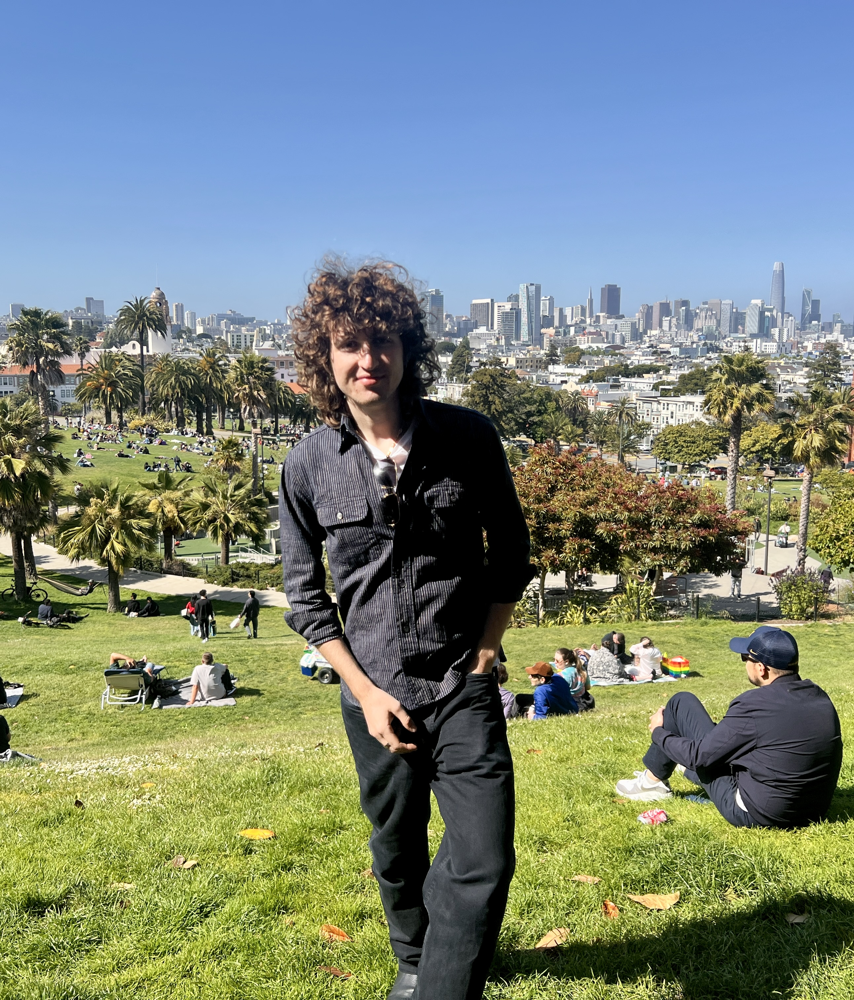

Loading
Fetching latest writing from Substack
Please wait a moment.

San Francisco, CA
About
Hello! I'm Arthur, and I am interested in controlling AI systems and also the downstream effects of technology on our society. I am an aspiring critical theory writer. Mainly, I work on Responsible AI and AI Safety at Pinterest to make sure our systems are inclusive and safe. This site tracks selected projects and writing notes. The writing feed below syncs from my Substack.
Selected Work
Accepted to ICLR 2026 Logical Reasoning of Large Language Models Workshop. Pending arXiv submission.
Latest from Substack
Open newsletterLoading
Please wait a moment.